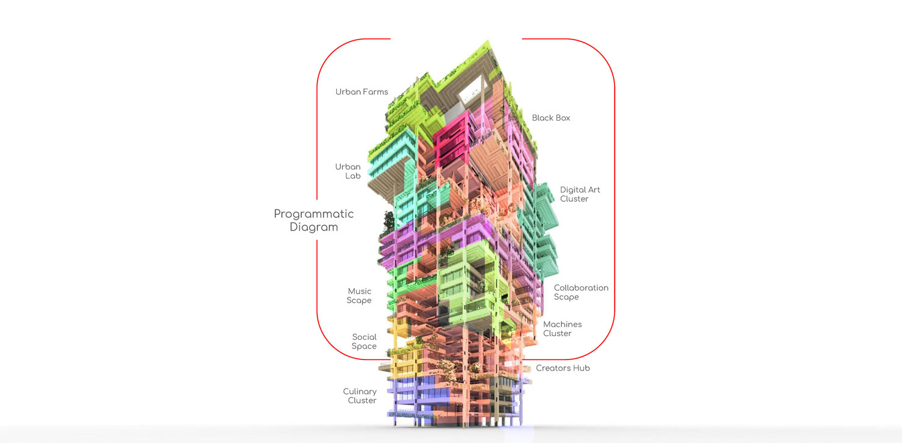

Summary
For over 300 years, Capitalism has been the main driver of our world development, the ambition to achieve the most profit has brought the idea of achieving the highest efficiency, productivity and innovation which fueled our world to undergo rapid development. Now, 80% of the world's work able body (more than 15 years old) population has basic education, which is a 400% boost compared to the beginning of 1820 (Roser and Ortiz-Ospina, 2016), and we are reaching 100% sooner or later. In today’s development, the World Economic Forum noted that the 4th Industrial Revolution is currently happening, driven by the exponential growth of Artificial Intelligence. (WEF, 2020) With that, the possibility of ultimate productivity and efficiency is just years ahead of us. This thesis would like to speculate what will happen if we work less? It is estimated an average person would work for as long as 90,000 hours of their life time or around 10 years of their life in a normal 50 years span of working life (Pryce-Jones, 2010). With that much increase of free time, what would happen? Imagining the world with less work would question the future of these buildings and this thesis would do exactly that. Even now, the COVID-19 pandemic has brought many firms to allow their firms to work from home (Kelly, 2020), catalysing the reduction of office space needs. This design thesis lays down a possible solution to the reclamation of single-use office buildings in the world where we work less. Coupled with the trend that now creative visions could start making a good living, brough the demand for diversity of spaces. Through ideas of digital material and design for disassembly we will attempt to do a layered adaptation to create diverse space for the needs of the future.About Me
Self-motivated architectural graduate with a massive interest in creative out-of-the-box designs that brings humans together through design. Seen by colleagues as a passionate team player and a creative thinker, I always strive to exceed expectations by constantly seeking new ideas, and learning from others as I have done in multiple local and global multidisciplinary practices.Name
Hendriko Teguh
Mentor
Kenneth Tracy/Christine Yogiaman
Typology
Tall Building
Site Location
Singapore

![]()

![]()
![]()
The Problems
The AI driven industry revolution and the increase of remote work, there is a trend that is showing the decrease of the demand of monolithic office space. Which consequently resulted in an oversupply of office buildings. The changing workscape is showing a trend towards the diversity of works, work people would collaborate spontaneously with anyone unlike the monolithic office scape. Creating a demand for diversity of work spaces which allows for incidental collaborations and networking. These, poses us with 2 main problems: The Oversupply of Office Space while there is The Increased Demand of Diverse Space.The Oversupply of Office Space
The World Economic Forum have stated that we are entering the Industry 4.0 the Artificial Intelligence Age, which is different from the technological third revolution, today we see the world that is changed in an unprecedented velocity, scope and the systems impact. Where AI and automation is not limited to one industry, but it is happening across the board in an unprecedented speed. Even before the AI revolution in 2013 where the third industrial revolution was at it’s peak, 47% of the US workforce was already threatened by computerisation, and this was not by AI. The question is what would happen to people? World Economic Forum in the Future of Jobs 2020 journal, just last october, projects that across the board, there will be a 5% increase where human work hours would be replaced by machines, that is 3 days worth of work out of a months worth of work.The covid-19 on the other hand, highlighted the digitization of businesses and ,ade many offices rethink the need of office spaces, microsoft, Twitter and Dropbox, has mandated that their employees are allowed to work from home even after the pandemic ends. And they are not the only ones. Further catalysing the reduction of office space needs.
Architects, developers, and workspace planners, have since rediscovered what is the meaning of office and what should the office be in the future. And this thesis is questioning not only the future of office, but also about what should we do with the oversupply of office buildings. Tim Reusch in Vitra Summit 2020, mentioned that now, we can get work done anywhere, and the office space is now more of a meeting place. Though the industry 4.0 has not reached its full effect, we should start rethinking about office buildings design.
The Increased Demand of Diverse Space
We would associate Office to Work. Defining work, according to Oxford Dictionary work is an Activity involving mental or physical effort done in order to achieve a purpose or result. Working in the current sense have a purpose of making a living. But with the work are done by automation and AI, what would people do? Though it seems that AI would take over our jobs, the economist Brynjolfson and Mcafee believes that there will be an increase in safe and rewarding jobs. And we can already start to feel this to be true.Kahlert from Midia Research stated that now the internet platforms are empowering creators to stay true with their creative visions, creating a much more rewarding job while still attainig a viable levels of profitability that once impossible. Social Media platforms takes a major role in this alternative idea of work.
With the empowerment of individuals to learn, express, and create through the internet, a new wave of individual workers working on their interests is coming. Interest based communities has started to take over the physical, instead of just forums, creating real collaboration space, beyond the digital. While these creators and makers could use Back the social platforms. To create self brand awareness and promote their passion, social enterprises, and creations. With the advent of more and more fintechs services, avenues of income is no longer limited to the desk jobs but expanding through the direct to customer model of creators, while expanding the horizon of collaboration for interest based work throughout the world.
The Idea
Looking at the supply of office building, the first thing we would have in our mind is the idea of adaptive reuse. With an existing building, there is already existing structures, and by demolishing the building we would release the embodied carbon and require even more labors demolish and rebuild. The common practice of adaptive reuse often includes the transfer of function, changing the main function with improvements of the building, more often than not, the resilience of the building does not change, thus making the possibly, obsolete again. The monotony of response is also a consideration, More and more buildings are readapted into housing, artisan shops and many are museums, even Sally Stone in her book undoing buildings questions how many museums a society could support? This thesis hopes that we could break this cycle. Thus, to tackle the oversupply of office building, this thesis extends adaptive reuse idea Through layered adaptation, where we seek understanding if building technicality, looking for areas that we could possibly save and create a system to adapt the building into a sustainable and resilient one.With the system of adaptation principle settled, we would move on to address the demand for diversity of spaces, we look at the 2 established educators and practitioners, Bill Hillier of the Space Syntax about the depth and syntaxes of spaces and Herman Hertzberger of HH Architects about the inbetween, public domains, and relationships of spaces. Both herman herzberger and bill hillier concepts are spatial concepts that could be translated into rule based arrangment system. Through this system we envision a diverse spaces to meet the demand for spaces of the future.
A critique on a world of less work and how we salvage the office building structure of the past to serve society of the future.
Through creation of a methodology that allows for spatial diversification through a layered adaptation.
The Layered Adaptation for Spatial Diversification Methodology

Digital Material and Design for Disassembly
In the core of the subject, we explore the idea of Digital Material and design for disassembly deeply which enables all the LASD Method be possible. Where The idea of aggregative design using digital material as put forth by Gilles Retsin and Neil Gershenfeld in many of their works shows an almost unlimited potential of reconfigurability, which could be even more powerful coupled with the understanding of Design for Disassembly. The idea of a digital material as described by Neil Greshenfeld is an assembly of discrete elements that have a limited set of connection possibilities, which compared to an analogue material with continuous connections. Think of lego and toothpaste.
To tackle the question on the sustainability and resilience of a building, this thesis looks at the concept of design for disassembly an idea where building materials are not only recyclable but also reusable. In a demolished building according to the paper by Yeo and Hwang from NUS, 50% of construction waste ends up in landfill. (Yeo & Hwang, 2011) With the DFD idea we envision building materials that can be reused and replaced easily where the value of material continues at its course.
A Possible Site: 6 Raffles Quay
To make sense of the methodology easier, we will be introducing to you the site first. Living in Singapore, a city state that is one of the most competitive finance and business hub in the world, with its development heyday of in the 1970s to the 1990s we do have many tall buildings. In Singapore alone there are 74 office buildings of more than 50 meters in height, and the newest capita spring by BIG is soon to be completed. More than 30 office buildings are more than 25 years old. With the more desirable new office spaces this presents the question on what would happen to the older mundane looking offices.
For this thesis, we will be looking at Raffles Place, where many tall buildings are located. Just accross the MRT, lay 6 Raffles Quay, a building that is surrounded by many taller buildings including the art deco former tallest building the Ascott Raffles Place.
Located at the address of it's own name 6 raffles quay is a building that is often missed. 6 Raffles Quaty was built in a simple core and slab arrangement with curtain wall and cladding system a building that we can safely describe as a typical office building Bringing the highligh to the methodology rather than the site specific.

The Preparation
At this stage we are trying to understand the building system and identify the areas that we want to save from the building. In this case of the 6 Raffles Quay, we have identified that the building services are located in the core of the building and the rest are a concrete column, beam and slab arrangment. Thus the core is what we are saving. By saving the core we are also saving the hassle of servicing the building as the vents and service system is located through this core. Thus, we first remove the facade system and with careful removal, maybe these cladding and glass could be reused. Leaving the core concrete monolithic structure behind. This leave us with a generic concrete column and slab system that we could edit.Stage 1 - Removal of Volumes
At this stage we are trying to understand the building system and identify the areas that we want to save from the building. In this case of the 6 Raffles Quay, we have identified that the building services are located in the core of the building and the rest are a concrete column, beam and slab arrangment. Thus the core is what we are saving. By saving the core we are also saving the hassle of servicing the building as the vents and service system is located through this core. Thus, we first remove the facade system and with careful removal, maybe these cladding and glass could be reused. Leaving the core concrete monolithic structure behind. This leave us with a generic concrete column and slab system that we could edit.Stage 1 - Digital Material for Support
At this stage we are trying to understand the building system and identify the areas that we want to save from the building. In this case of the 6 Raffles Quay, we have identified that the building services are located in the core of the building and the rest are a concrete column, beam and slab arrangment. Thus the core is what we are saving. By saving the core we are also saving the hassle of servicing the building as the vents and service system is located through this core. Thus, we first remove the facade system and with careful removal, maybe these cladding and glass could be reused. Leaving the core concrete monolithic structure behind. This leave us with a generic concrete column and slab system that we could edit.Stage 1 - Digital Material for Platforms
Through the same digital materiality and DfD Principles, platforms are created in 3 different main component shapes. Using the limited palette of 3 elements, we are able to create different spatial platforms which is beneficial for the diversity of space. The diagram shows the possibility of how the interface and the platform would connect to each other, forming the first degree of addition.Shows the possibility of how the platforms from the first degree addition to be received by the columns that was used on the support interface. This is the versatility of digital material that this thesis would like to highlight.
Stage 1 - Detailing
Building up upon the idea of digital materiality, we are able to create special connections and possible methodology of connection for spatial elements of the intervention. There are 3 important aspects to it:1) Glass - the main spatial divider,
2) Greenery - the main shading device, and
3) Railings - the main safety device.
The simple Glass detailing enabling it to be attached anywhere in the development. Planters could replace the platform base enabling deeper planter boxes. The railing detail is versatile enough to be either attached through the platform or through the planter boxes.
Creating Diverse Spaces
To further apply the idea of space diversity better, we turn our head back to the thinkers, educators, and practitioners, Bill Hillier of the Space Syntax as well as Herman Hertzberger “the social architect”.As we previously mentioned on the idea of depths and space syntax of bill hillier and the relationships in Herman Hertzberger works, we seek to apply the principles in this section.
Bill Hillier
Bill Hillier through his writing “Space is the Machine” we learn that there are 2 important things on understanding the syntax of a space, 1) depths and 2) the space syntax . In this thesis we translate these ideas into digital material rules, limiting connections and intersection of spaces, as shown by the diagram on the right.After much rigour and testing through the use of WASP a Rhino Grasshopper plugin, we have successfully create a diverse both depth and space syntax as shown on the two diagrams on the right. Creating a diverse space, both in depth and syntax. From using the simple spatial rules and combinations. Which we apply through out the building.
Herman Hertzberger
Herman Hertzberger through his book “Lessons for Architecture Students” we are inspired from 4 of the many ideas put forth by him as discussed in the previous chapter. These are the: 1) Territorial Claims, 2) Public Domain, 3) The In-between, and 4) Views .Through using the same wasp method, we are able to create limits of expansions, creating purposeful voids and opening to tend to the ideas put forth before.Territorial claims relates to the sense of ownership of the spaces, through the LASD Method we are able to create spaces with multiple ownerships, enabling spaces to be dynamic and unique from everywhere we stand. Creating a sense of unprecedented belonging. The public domain as the central idea brought together the public to be the centre space of a development, enabling versatile spaces for the intermingling of characters and activities. The in-between is the most important concept where we seek incidental meetings of users, creating spaces that have continual development and excitement of different groups collaborating and intermingling. Lastly, views, enables the relationship between users both into and beyond the development it self, creating a landscape of scenery within the same development, bringing diversity of spaces to even a higher level.

Applying to Singapore
This shows the places where communal interest based activities are currently located. We can see that there is a trend that draws such communal spaces to be in the centre of the city. As office buildings are mostly located in the city, this intervention shows a plausible programmatic combination that we could see in the future. With the source of inspiration, we draw possible spaces usage and its plausible dimensions for fitting into the project.While, through understanding the exposure to sunlight, we are able to identify spaces prime for greenery and urban farms.
The Programmatic Arrangement
Stage 2 - Expansion
The stage 2 of intervention, the expansion. The versatility of the methodology also enables for expansion beyond the current building and engulfing adjacent building step by step. With the digital materiality and the design for disassembly, it is possible for the building to be expanded during the occupation period itself.
The LASD Method enables old boring building into a versatile resilient building that could be adapted for the future use. Imagined to be the preferred adaptive reuse system of the future, we would be able to create spaces without demolishing old building entirely but through selective selection, keeping the embodied carbon while reducing the construction waste and costs.
The choice of steel and Mass Engineered Wood and Carbon Fibre Composite ensures the sustainability of the building material creating a system of construction that had immensely reduced pollution while lengthening the building life.
Stage 3 - Reconfiguration
As the world changes and the needs changes, another cycle of revolution could happen, maybe removing the needs of spaces for creators as argued before, the LASD method enables possible reconfiguration or even total disassembly of added spaces making this building timeless and will have no end of life.